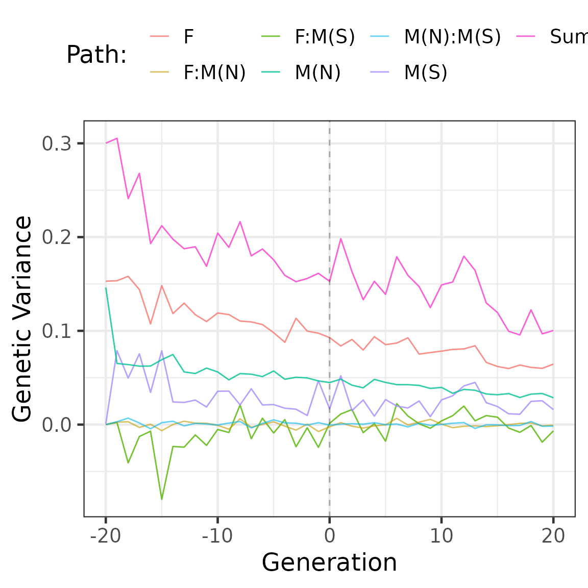

Partitioning genetic trends in mean and variance
Gregor Gorjanc, Jana Obsteter, Thiago de Paula Oliveira
2025-02-23
alphapart-variance.RmdIn breeding programmes, the observed genetic change is a sum of the contributions of different groups of individuals. Here we show how to partition the genetic mean and variance of breeding values using AlphaPart.
In addition to the contribution of paths to changes in genetic mean, breeding programmes should also consider analysing changes in genetic variance to understand the drivers of genetic change in a population fully. Managing the change in genetic mean and variance in breeding programmes is essential to ensure long-term genetic gain.
Loading datafile
#=======================================================================
# Reading and organizing Scenario 1
#=======================================================================
data <- readRDS("./../inst/extdata/AlphaPartCattleSim.rds") %>%
dplyr::mutate(across(generation:mother, as.numeric)) %>%
dplyr::rename(status = type) %>%
dplyr::mutate(across(c("sex", "status"), as.factor)) %>%
dplyr::mutate(path = interaction(sex,status, sep = ":")) %>%
arrange(generation, ind) %>%
select(ind, father, mother, sex, status, path, generation, tbv, pheno) %>%
dplyr::mutate(generation = generation - 20) %>%
droplevels()
# Data head
head(data) %>%
knitr::kable(digits = 2)| ind | father | mother | sex | status | path | generation | tbv | pheno |
|---|---|---|---|---|---|---|---|---|
| 1 | 0 | 0 | M | Non-Selected | M:Non-Selected | -20 | -0.27 | -0.48 |
| 2 | 0 | 0 | F | Non-Selected | F:Non-Selected | -20 | 0.75 | 0.89 |
| 3 | 0 | 0 | M | Non-Selected | M:Non-Selected | -20 | -0.10 | -0.04 |
| 4 | 0 | 0 | F | Non-Selected | F:Non-Selected | -20 | -0.53 | -1.44 |
| 5 | 0 | 0 | M | Non-Selected | M:Non-Selected | -20 | 0.70 | 0.88 |
| 6 | 0 | 0 | F | Non-Selected | F:Non-Selected | -20 | 0.25 | -0.63 |
# Data size
dim(data)## [1] 42000 9-
ind- individual -
fatherandmother- individual’s parents -
sex- individual sex -
status- if the individual is or not selected -
path- the path variable used to partition the additive genetic mean -
tbv- true breeding value -
pheno- phenotypic value
Partitioning trends in genetic mean and variance
We use the AlphaPart function to partition the true
breeding values (tbv) in the data by the
animal sex and status variable combination into females (F) and males
(M) non-selected (N) and males selected (S) contributions:
part <- AlphaPart(data, colId = "ind", colFid = "father",
colMid = "mother", colBV = "tbv", colPath = "path")##
## Size:
## - individuals: 42000
## - traits: 1 (tbv)
## - paths: 3 (F:Non-Selected, M:Non-Selected, M:Selected)
## - unknown (missing) values:
## tbv
## 0| ind | father | mother | sex | status | path | generation | pheno | tbv | tbv_pa | tbv_w | tbv_F:Non-Selected | tbv_M:Non-Selected | tbv_M:Selected |
|---|---|---|---|---|---|---|---|---|---|---|---|---|---|
| 1 | 0 | 0 | M | Non-Selected | M:Non-Selected | -20 | -0.48 | -0.27 | 0 | -0.27 | 0.00 | -0.27 | 0 |
| 2 | 0 | 0 | F | Non-Selected | F:Non-Selected | -20 | 0.89 | 0.75 | 0 | 0.75 | 0.75 | 0.00 | 0 |
| 3 | 0 | 0 | M | Non-Selected | M:Non-Selected | -20 | -0.04 | -0.10 | 0 | -0.10 | 0.00 | -0.10 | 0 |
| 4 | 0 | 0 | F | Non-Selected | F:Non-Selected | -20 | -1.44 | -0.53 | 0 | -0.53 | -0.53 | 0.00 | 0 |
| 5 | 0 | 0 | M | Non-Selected | M:Non-Selected | -20 | 0.88 | 0.70 | 0 | 0.70 | 0.00 | 0.70 | 0 |
| 6 | 0 | 0 | F | Non-Selected | F:Non-Selected | -20 | -0.63 | 0.25 | 0 | 0.25 | 0.25 | 0.00 | 0 |
We use the generic summary.AlphaPart function to
summarize an AlphaPart object by generation,
con*sering:
- the function mean
# Trends in the additve genetic mean
partMean <- summary(part, by = "generation", FUN = mean)
head(partMean$tbv) %>%
knitr::kable(digits = 2)| generation | N | Sum | F:Non-Selected | M:Non-Selected | M:Selected |
|---|---|---|---|---|---|
| -20 | 2000 | 0.00 | 0.00 | 0.00 | 0.00 |
| -19 | 1000 | -0.12 | 0.00 | 0.00 | -0.12 |
| -18 | 1000 | 0.31 | 0.13 | -0.01 | 0.18 |
| -17 | 1000 | 0.68 | 0.17 | 0.00 | 0.51 |
| -16 | 1000 | 1.14 | 0.34 | 0.01 | 0.79 |
| -15 | 1000 | 1.34 | 0.37 | 0.00 | 0.97 |
- the function variance
# Trends in the additive genetic variance
partVar <- summary(part, by = "generation", FUN = var, cov = TRUE)
head(partVar$tbv) %>%
knitr::kable(digits = 2)| generation | N | Sum | F:Non-Selected | M:Non-Selected | M:Selected | F:Non-SelectedM:Non-Selected | F:Non-SelectedM:Selected | M:Non-SelectedM:Selected |
|---|---|---|---|---|---|---|---|---|
| -20 | 2000 | 0.30 | 0.15 | 0.15 | 0.00 | 0.00 | 0.00 | 0.00 |
| -19 | 1000 | 0.31 | 0.15 | 0.07 | 0.08 | 0.00 | 0.00 | 0.00 |
| -18 | 1000 | 0.24 | 0.16 | 0.06 | 0.05 | 0.00 | -0.04 | 0.01 |
| -17 | 1000 | 0.27 | 0.14 | 0.06 | 0.08 | 0.00 | -0.01 | 0.00 |
| -16 | 1000 | 0.19 | 0.11 | 0.06 | 0.03 | 0.00 | -0.01 | 0.00 |
| -15 | 1000 | 0.21 | 0.15 | 0.07 | 0.08 | -0.01 | -0.08 | 0.00 |
Example of plots to analyse the results
Distribution of breeding value partitions by sex and selection status (selected males (M(S)), non-selected males (M(N)), and females (F)) over generations.
part$tbv %>%
ggplot(aes(y = as.factor(generation), `tbv_F:Non-Selected`)) +
geom_density_ridges(
aes(fill = "F - Non-Selected", linetype = "F - Non-Selected"),
alpha = .4, point_alpha = 1, rel_min_height = 0.01
) +
geom_density_ridges(
aes(y = as.factor(generation), x= `tbv_M:Non-Selected`, fill = "M - Non-Selected",
linetype = "M - Non-Selected"),
alpha = .4, point_alpha = 1, rel_min_height = 0.01
) +
geom_density_ridges(
aes(y = as.factor(generation), x= `tbv_M:Selected`, fill = "M - Selected",
linetype = "M - Selected"),
alpha = .4, point_alpha = 1, rel_min_height = 0.01
) +
geom_density_ridges(
aes(y = as.factor(generation), x= `tbv`,
fill = "Sum", linetype = "Sum"),
alpha = .4, point_alpha = 1, rel_min_height = 0.01
) +
ylab("Generation") +
xlab("Density plot of breeding value partitions") +
labs(fill = "Path:", linetype = "Path:") +
theme_bw(base_size = 20) +
theme(
legend.position = "top"
) ## Picking joint bandwidth of 0.0624## Picking joint bandwidth of 0.0073## Picking joint bandwidth of 0.0357## Picking joint bandwidth of 0.0918
Partitions of genetic mean and variance by sex and selection status (selected males (M(S)), non-selected males (M(N)), and females (F)) using true breeding values:
partMean$tbv %>%
ggplot(aes(y = Sum, x = generation, colour = "Sum"),
size = 0.1) +
scale_linetype_manual(
values = c("solid", "longdash", "dashed", "dotted"))+
geom_line() +
geom_line(aes(y = `F:Non-Selected`, x = generation,
colour = "F"), alpha = 0.8) +
geom_line(aes(y = `M:Selected`, x = generation,
colour = "M(S)"), alpha = 0.8) +
geom_line(aes(y = `M:Non-Selected`, x = generation,
colour = "M(N)"), alpha = 0.8) +
geom_vline(xintercept = 0, linetype = 2, alpha = 0.3) +
ylab("Genetic Mean") +
xlab("Generation") +
labs(colour = "Path:") +
theme_bw(base_size = 18) +
theme(legend.position = "top")
partVar$tbv %>%
ggplot(aes(y = Sum, x = generation, colour = "Sum")) +
geom_line() +
geom_line(aes(y = `F:Non-Selected`, x = generation,
colour = "F"), alpha = 0.8) +
geom_line(aes(y = `F:Non-SelectedM:Selected`, x = generation,
colour = "F:M(S)"), size =0.5, alpha =0.8) +
geom_line(aes(y = `F:Non-SelectedM:Non-Selected`, x = generation,
colour = "F:M(N)"), size =0.5, alpha =0.6) +
geom_line(aes(y = `M:Non-SelectedM:Selected`, x = generation,
colour = "M(N):M(S)"), size =0.5, alpha =0.6) +
geom_line(aes(y = `M:Selected`, x = generation,
colour = "M(S)"), alpha = 0.8) +
geom_line(aes(y = `M:Non-Selected`, x = generation,
colour = "M(N)"), size =0.5, alpha =0.8) +
geom_vline(xintercept = 0, linetype = 2, alpha = 0.3) +
ylab("Genetic Variance") +
xlab("Generation") +
labs(colour = "Path: ") +
theme_bw(base_size = 18) +
theme(
legend.position = "top"
)## Warning: Using `size` aesthetic for lines was deprecated in ggplot2 3.4.0.
## ℹ Please use `linewidth` instead.
## This warning is displayed once every 8 hours.
## Call `lifecycle::last_lifecycle_warnings()` to see where this warning was
## generated.